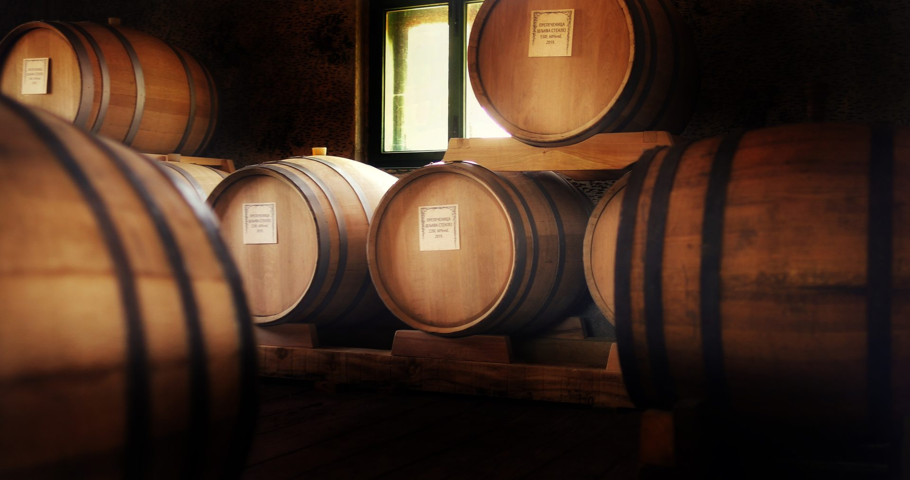

Bajka o šljivi
Skroluj

Vizija
Jedan od osnivača i pokretača brenda, Marko Popović postavio je jasan pravac razvoja Skaske – vrhunski kvalitet bez kompromisa. Njegova vizija spaja porodično nasleđe, savremene standarde i snažan identitet brenda.

Zanatstvo
Jedan od osnivača brenda i četvrta generacija majstora destilacije, Zoran Jevtović je odgovoran za karakter Skaske. Njegovo iskustvo i filigranska senzorika vode pažljivo kontrolisanu dvostruku destilaciju i stvaranje prepoznatljivog, elegantnog profila rakije.

Nasleđe
Jedan od osnivača, Andreja Bošković donosi duboku povezanost sa zemljom i razumevanje da vrhunska rakija počinje od vrhunskog ploda. Njegov pristup oslanja se na poštovanje prirode i strpljenje koje autentična srpska šljivovica zahteva.




Proces
Skaska nastaje u selu Bare u Šumadiji, od pažljivo negovane sorte šljive Stanley, koja se uzgaja u našim voćnjacima na tri specifične mikro lokacije: Brdo, Aleksića i Kovionica, pod stručnim nadzorom Aleksandra Uroševića, diplomiranog agronoma. Nakon kasne septembarske berbe, plod se pažljivo pasira i prepušta sopstvenoj spontanoj fermentaciji u prohromskim tankovima, bez ičega dodatog i bez ičega oduzetog. Kada se proces prirodno privede kraju, kljuk ide na dvostruku destilaciju u zanatski izrađenim bakarnim kazanima. Destilat zatim sazreva najmanje pet godina u francuskim hrastovim barik buradima, gde razvija punoću, mekoću i složen aromatski profil. Spoj prirode, znanja i vremena daje Skaski njen prepoznatljiv karakter.
2017.
Osnovano
5+
Godina odležavanja
1.100
Stabala šljiva
10K
Flaša godišnje